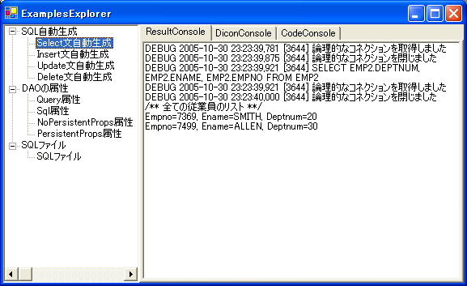

|
 |
|||||
S2Dao.NET TOP page
S2Dao.NET - Examples (S2Dao.NET-0.10)IntroductionLet's try out S2Dao.NET by running a sample program included with S2Dao.NET. Requirements:Following software are required to run the sample program:Preparing the databaseThe sample program requires SQL Server 2000 or MSDE 2000. First, create database "s2dotnetdemo" in the SQL Server. The sample program will use this database. To create the "s2dotnetdemo" database, execute the setUpDemo.bat script file in the source/S2Dao.NET.Examples/data/ folder. This script file will execute the Demo.sql sql script file included in the same folder. If the script completes without an error, "s2dotnetdemo" database should be created. The samples uses Windows authentication to login to the SQL Server. Before running the sample program, grant Windows user that will execute the sample program read privilege (db_datareader role) and write privilege (db_datawriter role). SetupFollowing are steps to use the sample with Microsoft Visual Studio .NET 2003. Start Visual Studio and open source/S2Dao.NET.sln. Setting Startup ProjectSet the sample program as a startup project. Set S2Dao.NET.Examples project as a startup project. (To set S2Dao.NET.Examples as a startup project, right click on S2Dao.NET.Examples project from the Solution Explorer and select "Set as StartUp Project".) SQL Server SetupEdit easar.Dao.Examples/Ex.dicon file in the S2Dao.NET.Examples project project. Set [ConnectionString] property in [SqlDataSource] component to SQL Server database connection string. Change the "Server" in the database connection to the SQL Server instance name or to the network address of the SQL Server. <component name="SqlDataSource" class="Seasar.Extension.Tx.Impl.TxDataSource">
<property name="DataProvider">Ex.SqlClient</property>
<property name="ConnectionString">
"Server=SQLServer instance name;database=s2dotnetdemo;Integrated Security=SSPI"
</property>
</component>
Running the SampleAfter completing the above setup setup, sample program may be execute. Either build the project and execute the S2Dao.NET.Examples.exe or run the program in debug mode from Visual Studio. ExamplesExplorer will be executed to try out S2Dao.NET. Operations supported by the installed S2Dao.NET are listed in the left side. When an operation is selected and executed from the left pane, result of the operation is displayed in the right pane. The right pane has 3 tabs to display result log (ResultConsole), content of dicon file used to execute the operation (DiconConsole), and the source code (CodeConsole). Select on the tab to display the corresponding information.  |
|||
|